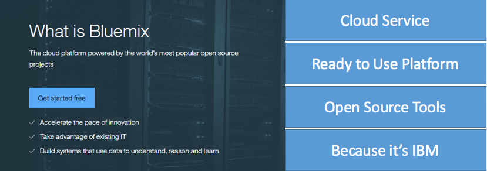
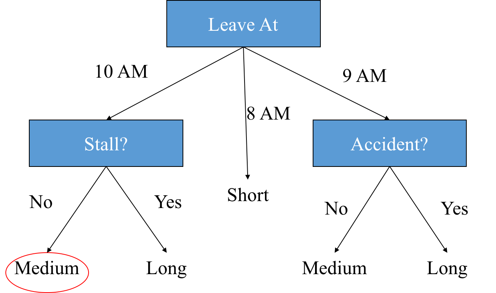

Introduction to Analytics
I'm Vishnu.
What do i do for Living ?
I work as a Data Science Engineer.
What do I Do?
- Distributed Systems
- Machine Learning
- Deep Neural Networks
What do I work on?
- Languages : Scala, C & C++
- Technologies : Spark, Hadoop, Akka, Vowpal Wabbit & More
What is Analytics ?
Analytics is the discovery, interpretation, and communication of meaningful patterns in data.
The science of examining raw data with the purpose of drawing conclusions about that information
Where is Analytics used ?
Almost Everywhere !!
Lets Look at some Daily Examples
- Finance
- Stock
- Automotive Systems
- Aeronautics
- Websites
- E-commerce
- Digital Advertising
- etc
Workflow of Analytics Project / System
- Planing, organizing & requirement gathering
- Gathering Data
- Data Cleaning
- Analyzing Data, Predictive Modelling & Result Generation
- Result Presentation
Machine Learning
Cloud Computing, Bluemix and Analytics
SAAS--PAAS--IAAS
IBM Bluemix
Platform as a Service
Zero Infrastructure, Lower Risk
Lower cost and improved profitability
Easy and quick development, Monetize quickly
Reusable code and business logics
Integration with other web services
Bluemix Offerings
- Storage
- Analytics
- Watson
- Mobile
- IOT
- Containers
IBM Bluemix Data & Analytics
Data Storage
- Cloudant NOSQL DB
- Redis
- IBM DashDB
Graph Processing
- IBM Graph
Number Crunching
- IBM Analytics for Apache Spark
Why Bluemix?
Getting Started
Setup and basics
Basics of R Programming
Learning further with swirl
What is Machine Learning?
- Tom Mitchell
Supervised Learning - Regression
Linear Regression
- Modeling the relationship between a scalar dependent variable and one or more explanatory variables (or independent variables)
- If we have only one independent variable, the model is called as simple linear regression, otherwise, multiple linear regression
Linear Regression
Goal: Find the line such that distance from line to each point is minimized.
We will 'fit' the points with a line, so that an 'objective function' is minimized. The line we thus obtain would minimize the sum of squared residues (least squares).
Logistic Regression
A regression model where the dependent variable (DV) is categorical.
Logistic regression is technically a classification technique; do not get confused by the word 'Regression'
Logistic Regression
We will 'fit' the points with a line, so that an 'objective function' is minimized. The line we thus obtain would minimize the sum of squared residues (least squares).
Supervised Learning - Classification
Nearest Neighbor Approaches
Find k closest training examples, and poll their class values
K Nearest Neighbors (k-NN)
k-NN is a type of instance-based learning , or lazy learning , where the function is only approximated locally and all computation is deferred until classification.
One of the simplest machine learning algorithms.
Decision Trees
Find a model for class attribute as a function of the values of other attributes.
Decision Trees
Goal: Build a tree; At each node, split the data on the basis of one attribute which provides the maximum split
> If Dt contains records that belong the same class yt, then t is a leaf node labeled as yt
> If Dt is an empty set, then t is a leaf node labeled by the default class, yd
> If Dt contains records that belong to more than one class, use an attribute test to split the data into smaller subsets. Recursively apply the procedure to each subset.
Decision Trees
- Determine how to split the records
- How to specify the attribute test condition?
- How to determine the best split?
- Determine when to stop splitting
Decision Trees – Travel Time to Office

Random Forests
Ensemble classifier containing many decision trees and outputs the class that is the mode of the class's output by individual trees.
Naïve Bayes
Apply Bayes’ theorem with the “naive” assumption of independence between every pair of features
- Before the evidence is obtained; prior probability
- P(a) the prior probability that the proposition is true
- P(cavity)=0.1
- After the evidence is obtained; posterior probability
- P(a|b)
- The probability of a given that all we know is b
- P(cavity|toothache)=0.8
Unsupervised Learning
Clustering
Draw inferences from datasets consisting of input data without labeled responses. Clustering is used for exploratory data analysis to find hidden patterns or grouping in data

Marketing: segment customer behaviors
- Banking: fraud detection
- Gene Analysis: identify gene responsible for a disease
- Image Processing: identifying objects in an image (e.g. face recognition)
- Insurance: identify policy holders with high average claim cost
Thank you